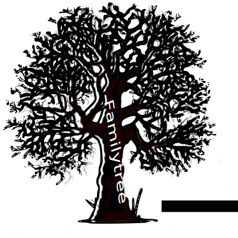

<mat-toolbar>
    <mat-nav-list fxFlex fxLayout='row'>
        <mat-list-item fxLayoutAlign="center">
            <mat-icon>directions_walk</mat-icon>&nbsp;
            <a [routerLink]="[{ outlets: { primary: ['personscreen'], sidenavNavigatie: ['searchhub'], personsChildren: ['childrenscreen'] } } ]" routerLinkActive="active-list-item">Personen</a>
        </mat-list-item>
        <mat-list-item fxLayoutAlign="center">
            <mat-icon>supervisor_account</mat-icon>&nbsp;
            <a [routerLink]="[{ outlets: { primary: ['relationscreen'], sidenavNavigatie: ['searchhub'] } } ]" routerLinkActive="active-list-item">Relaties</a>
        </mat-list-item>
        <mat-list-item fxLayoutAlign="center">
            <mat-icon>description</mat-icon>&nbsp;
            <a [routerLink]="[{ outlets: { primary: ['infoscreen'] } } ]" routerLinkActive="active-list-item">Info</a>
        </mat-list-item>
    </mat-nav-list>
    <span class="logo-container" fxLayoutAlign="start">
        
    </span>

</mat-toolbar>

<mat-sidenav-container autosize>
    <mat-sidenav #sidenav mode="side" opened disableClose role="content">
        <router-outlet name="sidenavNavigatie"></router-outlet>
    </mat-sidenav>
    <mat-sidenav-content role="main" fxLayout="row">

        <div class="content-left">
            <router-outlet></router-outlet>
        </div>

        <div class="content-right" fxLayout="column">
            <div class="right-upper-cell">
                <router-outlet name="personsChildren"></router-outlet>

            </div>
            <div class="right-lower-cell">
                <router-outlet name="personsDocuments"></router-outlet>
                <!-- -----! Hier komen de documenten !----- -->
            </div>
        </div>

    </mat-sidenav-content>
</mat-sidenav-container>